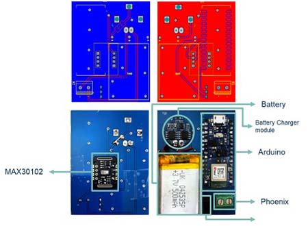
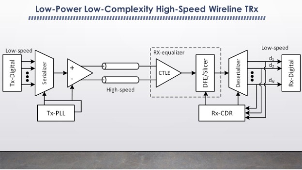
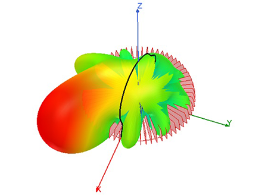
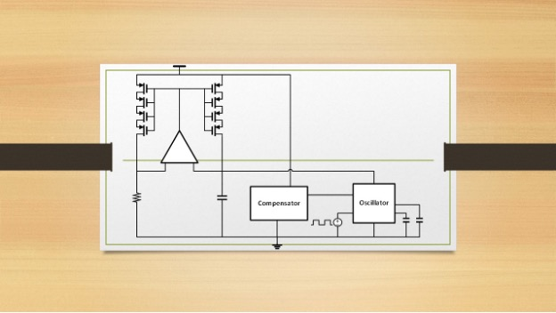
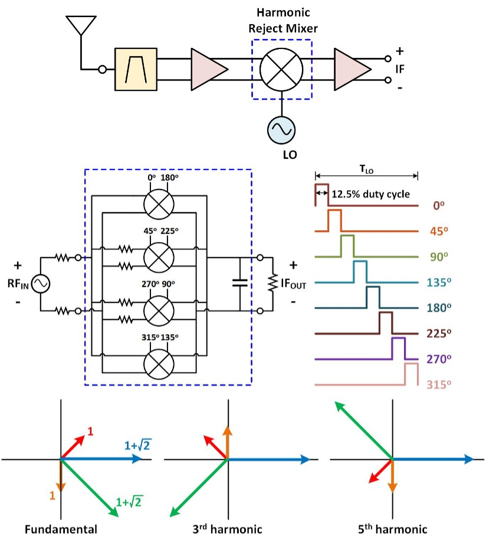
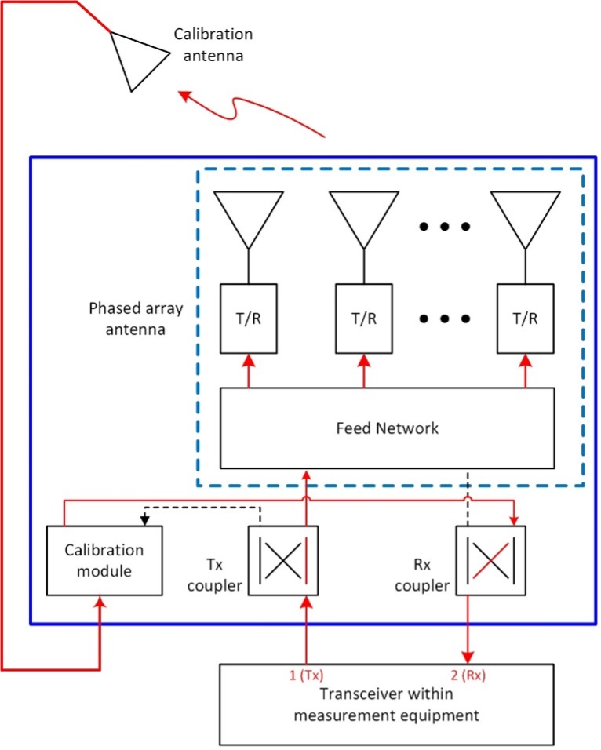

Brief Research Descriptions
In SHINE, we aim to merge applied electromagnetics and integrated circuits/systems to establish a cohesive research team that enables the development of innovative circuits/systems for a wide range of applications
Here are some examples of our current projects
-

This research provides an innovative solution to a critical problem in simultaneous transmit and receive (STAR) communication and radar systems. In this research, our main focus is to address the significant issue of self-interference, a problem often leading to receiver saturation and nonlinearity. To tackle this challenge, we've designed a specialized self-interference cancellation circuit tailored for shared W-band (77-81 GHz) antennas in automotive FMCW radar applications. Our approach encompasses various techniques in antenna and RF domains to effectively reduce self-interference signals through segregating desired and undesired signals into common and differential modes.
-

Wearable technology is becoming popular in medical fields, enabling an early detection of various diseases such as sleep disorders. Sleep apnea, a significant sleep disorder, presents challenges due to expensive diagnostic methods. To address this, a novel wireless wearable system has been developed which captures bio-signals and transmits them to a smartphone, allowing for a low-cost sleep apnea diagnosis. The system uses readily available components and records eight signals, including movement and Photoplethysmography (PPG) data. These signals are correlated with vital signs using an advanced signal processing, allowing for an impressive accuracy of 90.2% in apnea and hypopnea events detection. The resulting accuracy is further improved using sensor fusion techniques, reaching 95.1% for total apnea and hypopnea events, and nearly 98% for the Apnea-Hypopnea Index (AHI), maintaining an average reliability rate of approximately 93%.
-

There is an increasing demand for ultra-low-power electronic systems to extend the battery life of portable devices, implantable biomedical instruments, and wearable health monitoring systems. Low-power and low-voltage systems also allow for the operation of wireless IoT devices through energy harvesting. This research presents two novel, low-noise, low-voltage, and energy-efficient amplifiers with high CMRR that can be used for portable or implantable biopotential acquisition systems such as implantable ECG and brain electrical activity monitoring microsystems.
-

To catch up with the escalating network traffic and to meet the ever-growing demand for high data rates of wireline communication systems while enhancing their power efficiency, we have offered several solutions in our group, a couple of which are outlined below:
-
We have introduced a novel signaling method (communication protocol) which is based on a Nyquist-rate orthogonal pulse amplitude modulation scheme. This innovative signaling approach allows for a high-rate data transmission and a high quality (with low sensitivity to noise and jitter) data reception while reducing the power consumption of wired transceivers. This efficiency is derived from the unique structure of the proposed signaling, which can be implemented using simple and low-power integrated circuits and eliminates the requirement of complex equalizers and clock and data recovery (CDR) circuits.
-
Our group has also proposed a novel wireline communication system incorporating an accordion-type oscillator for precise control of loop frequency and individual clock phases. This system is notable for its compact size and low power consumption.
-
-

We've developed a low-power phase shifter with independent control over both phase and amplitude of its output signal. This versatile phase shifter can be utilized to adjust clock pulse phases in wireline transceivers, as well as to independently control the phase and amplitude of excitation signals in phased array systems. With a 360-degree phase tuning range, compact size, minimal power consumption, and a simple control interface, this phase shifter is an excellent choice for 5G networks and low-power wireline communication systems.
-

Beamforming and steering, which have been typically achieved using phased array antennas, allow for mitigating the propagation loss of energy and are essential in modern communication and radar systems. This work introduces an innovative technique based on superimposing circular waveguide TEn1 modes for circular polarized beamforming and 360° beam steering. What's remarkable is that this method can be implemented with a single, relatively compact antenna structure. This beamforming/steering antenna has potential applications in user mobile devices, base stations, repeaters, and radars. Moreover, owing to its circular polarized radiation, it offers improved immunity to issues like multipath fading and multiple reflections and eliminates the need for Tx and Rx precise antenna alignment.
-

The growth of automotive driving and the increasing speed of data transfer protocols, such as CAN Bus and USB, have raised the demand for stable clock sources maintaining low temperature coefficient (TC) over a wide temperature range (e.g. from -20°C to +100°C). Additionally, a robust oscillator consuming a very low amount of power is also crucial in wearables, network sensors, and IoT. Traditionally, temperature-dependent frequency variation has been mitigated using off-chip components, but this approach comes at the cost of increased size and power consumption. The main objective of this research is to design an integrated low-power oscillator that ensures a consistent frequency despite temperature changes.
-

The growing demand for wideband radio systems and the desire to minimize the number of high-frequency filters in radio systems have driven our motivation to design harmonic rejection mixers. We intend to reduce power consumption by utilizing low-power multi-phase square wave generators. Such harmonic rejection mixers would be well-suited for 5G telecommunications applications.
-

Self-calibrated phased arrays are capable of autonomously calibrating and optimizing their performance without external calibration equipment or any manual adjustment. These arrays include multiple antenna elements that can dynamically adjust their excitation phase and amplitude settings to compensate for component variations, environmental changes, or other sources of interference. Integrated self-calibrated phased arrays offer significant advantages, but they also face several challenges, including high power consumption, large area, complex circuitry, and limited tuning range. In this project, we focus on developing a low-complexity, compact, and low-power self-calibrated phased array with a large tuning range to facilitate their commercial use.